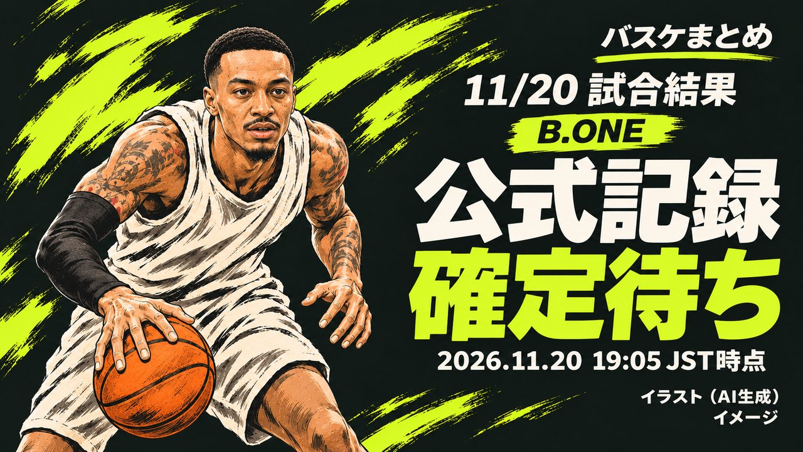

11/20 試合結果（公式記録の確定待ち）

試合結果
各試合の状態は 2026-11-20 19:13 JST 時点の公式記録です（試合前／開始・公式記録未確定／終了）。
B.ONE
この日試合なし：B.PREMIER・B.NEXT
試合結果 ／ 当日の EFF
当日のEFF・ポジション別TOP3
実際に出場した選手・公式試合スタッツ
B.ONE
全試合の公式記録確定待ち。確定後に掲載します。
試合結果 ／ FANTASY ARENA
最高の手札（この日の結果から）
この日の公式EFFで、あとから見て一番点が出た5人。カードの点だけ（ボーナス別）
全試合の公式記録確定待ち。確定後に掲載します。
試合前 ／ 今季平均 EFF
出場予定選手（登録選手）のベスト5
対象日：2026-11-20
B.ONE
ベスト5
| 位置 | 選手・所属 | 平均EFF | 試合数 |
|---|---|---|---|
| PG | レイナルド・ガルシア 岡山 | 28.1 | 14 |
| SG | マーク・バートン 金沢 | 8.6 | 16 |
| SF | シャキール・ハインズ 愛媛 | 17.6 | 17 |
| PF | ジョシュ・スコット 岡山 | 22.6 | 14 |
| C | キーガン・レコード 金沢 | 25.2 | 16 |
サブ5
| 位置 | 選手・所属 | 平均EFF | 試合数 |
|---|---|---|---|
| PG | 森田 雄次 福島 | 13.3 | 17 |
| SG | ワイリー 光希スカイ 福島 | 8.4 | 17 |
| SF | ケニー・マニゴールト 福島 | 17.4 | 14 |
| PF | キャメロン・ジャクソン 岡山 | 20.9 | 18 |
| C | ノア・ウォーターマン 山形 | 20.6 | 16 |
出典・選出ルール・注記
当日TOP3は全試合の公式記録確定後、出場時間がある選手の公式EFFでリーグ別・ポジション別に選出します。今季平均や予想とは別集計です。
公式登録の兼任ポジションは各部門の対象です。
同率は同順位、同率内は選手IDの昇順で最大3人を表示します。
ポジションは資料取得時点の公式登録で、当日の起用位置を断定しません。
未取得値は0に置き換えません。
EFF＝得点＋REB＋AST＋ST＋BS＋被ファウル－TO－被ブロック－ファウル－外した2P・3P・FT。順位には公式配信EFFを使用し、内訳からの再計算で置き換えません。公式用語集
対象試合の現在登録選手を、資料取得時点の今季平均EFFで選びます。対象試合の実績ランキングとは別集計です。
PG→SG→SF→PF→Cの順に上位を割り当て、残りからサブ5を選出します。同じ選手は1枠、同じ平均値は選手ID順です。
リーグ間は比較しません。公式IL登録中・平均未確認の選手は除外します。出場確定を示す選出ではありません。
今季平均の表では、公式の1試合当たり平均EFFを使用します。通算合計からの再計算はしません。所属・ILも資料取得時点の情報です。
この日試合なし：B.PREMIER・B.NEXT
B.ONE 選手・平均資料取得：2026-11-20 12:06 JST
資料取得 2026-11-20 19:13〜2026-11-20 19:14 JST
出典：B.LEAGUE公式
B.PREMIER 公式日程・結果（取得 2026-11-20 19:13 JST）
B.ONE 公式日程・結果（取得 2026-11-20 19:14 JST）
B.NEXT 公式日程・結果（取得 2026-11-20 19:14 JST）
公式試合詳細（取得 2026-11-20 19:14 JST）
公式試合詳細（取得 2026-11-20 19:14 JST）
公式試合詳細（取得 2026-11-20 19:14 JST）
公式クラブ登録選手一覧（取得時刻未記録）
公式クラブ登録選手一覧（取得時刻未記録）
公式クラブ登録選手一覧（取得時刻未記録）
公式クラブ登録選手一覧（取得時刻未記録）
公式クラブ登録選手一覧（取得時刻未記録）
公式クラブ登録選手一覧（取得時刻未記録）
公式インジュアリーリスト（取得 2026-11-20 19:13 JST）
公式スタッツ（今季平均・EFF）（取得時刻未記録）